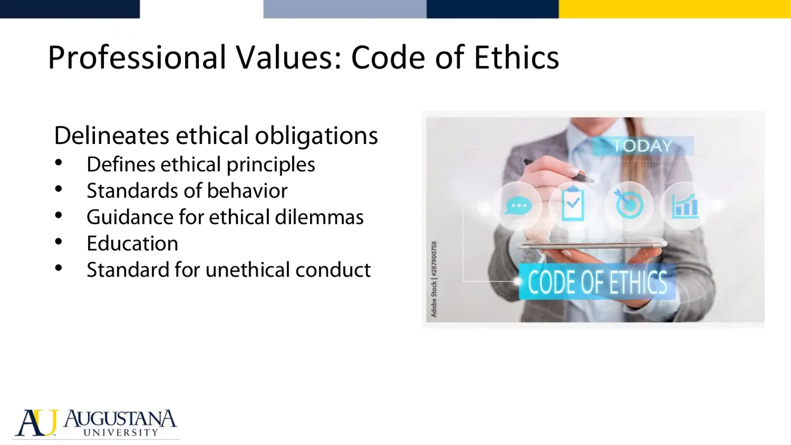

Courses › Professional Competencies I › Module 2
Professional Competencies I · 6811
Module 2 — APTA Core Values & Code of Ethics
Topics: 2.1 Core Values • 2.2 Code of Ethics
📖 How to Use These Notes
- Best used with the lecture playing — keep these open, follow along, and add your own notes as you watch
- Lecture banners mark the start of each topic and run in the same order as the videos
- 🎙 Callouts = direct insights from the instructor's transcript
- ★ Tips = exam-relevant content or things the instructor told you to prepare
- Figures are taken directly from the module's slide decks
- Each topic ends with its own Quick-Reference Glossary
- Written from last year's recordings — if a lecture has been re-recorded or resequenced, Canvas wins
- This module is built on the APTA source documents and Miller & Brogan readings — the linked originals are the tested material
TOPIC 2.1
APTA Core Values
1. Why Values
- Values define what we believe and stand for; professionally they are the framework for ethical decision-making and professional conduct, a shared standard of integrity, and the glue of professional community and belonging.
2. The Nine Core Values

| Core value | Ask yourself (study prompt) |
|---|---|
| Accountability | Do I own my decisions, actions, and their consequences? |
| Altruism | Do the patient's needs come before my own interests? |
| Collaboration | Do I work toward shared goals with patients, families, and the team? |
| Compassion and caring | Do I seek to understand the person, not just the condition? |
| Duty | Do I meet my obligations to patients, profession, and society? |
| Excellence | Do I use current knowledge and challenge mediocrity? |
| Inclusion | Do I create a welcoming environment for all? |
| Integrity | Is my conduct truthful and aligned with professional standards? |
| Social responsibility | Do I promote the mutual trust between the profession and society? |
- Readings: APTA Standards of Practice for Physical Therapy; Miller & Brogan, *Professionalism in the Practice of Physical Therapy: A Case-Based Approach*, Ch. 1 pp. 16–17 (history of the core values and their relationship to the profession's guiding documents).
3. Augustana-Specific Standards
- This module also covers Augustana DPT student standards and regulations, digital citizenship, and professional communication in the digital world — review the program handbook materials in Canvas.
TOPIC 2.2
APTA Code of Ethics
1. What the Code Is and Does

- Created by the APTA House of Delegates, the Code: defines eight ethical principles; sets standards of behavior and performance that form accountability to the public; gives guidance for ethical dilemmas; educates PTs, students, and the public; and establishes the standard for unethical conduct.

- The Guide for Professional Conduct interprets the Code through the PT's five roles: management of patients/clients, consultation, education, research, administration.
2. The Opening Scenario
Consider this
- Your patient with chronic pain reports their prescribed opioid is no longer effective and asks you to support an increased dose. You're concerned about risk and addiction. How should you respond?
- Work it through the Code: which principles apply? What are your obligations to the patient, the physician, and society? What does compassionate, accountable practice look like here?
3. Ask Yourself (from the module pages)
- The purpose of the Code • its key principles and values • how they align with your personal values • how they apply to your role • the consequences of failing them • how you keep your actions consistent with the Code • how you promote ethical conduct among colleagues and community.
- Readings: APTA Code of Ethics for the Physical Therapist; Miller & Brogan Ch. 1 pp. 10–14 — the Code's history and the profession's move toward social and moral responsibility.
Module 2 — Quick-Reference Glossary
| Term | Definition |
|---|---|
| Core values | Nine values guiding all PT behavior (accountability → social responsibility) |
| Sample indicators | APTA's concrete example behaviors for each core value — know them |
| Code of Ethics | Eight-principle House of Delegates document; the profession's ethical foundation |
| Guide for Professional Conduct | Interprets the Code across the five PT roles |
| Five roles | Management of patients/clients, consultation, education, research, administration |
| Standards of Practice | APTA's statement of conditions and performances essential to high-quality PT |
| Digital citizenship | Professional conduct and communication standards online |
▶ Required reading (from the Canvas pages)
- APTA Ethics and Professionalism hub — Topic 2.1 assigned exploration
- APTA Standards of Practice — Topic 2.1 assigned reading
- Code of Ethics for the Physical Therapist (PDF) — Topic 2.2 assigned reading